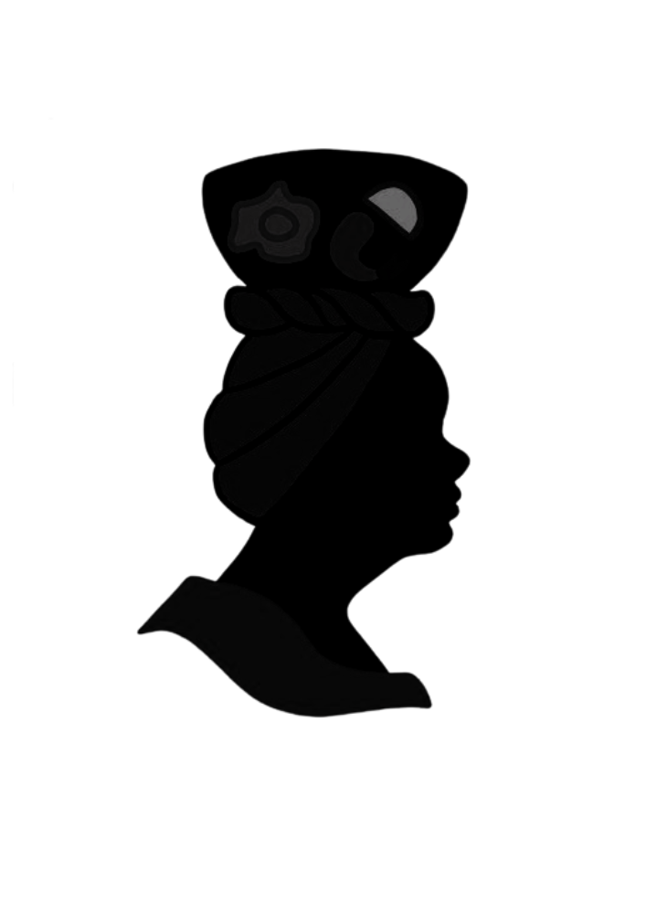

In collaboration with

"Food in any culture is never just about filling stomachs. It is about love affairs and pleasure and passion; about textures and aroma; about cultural identity"
"Food in any culture is never just about filling stomachs. It is about love affairs and pleasure and passion; about textures and aroma; about cultural identity"

A look at classic Colon dishes you need to try


"Many Colonenses prefer the taste of food prepared with seafood. Meals acquire a unique flavor because of the taste that seafood releases when boiled."
Colon chefs that can satisfy your whims


The best service to have a flavors festival